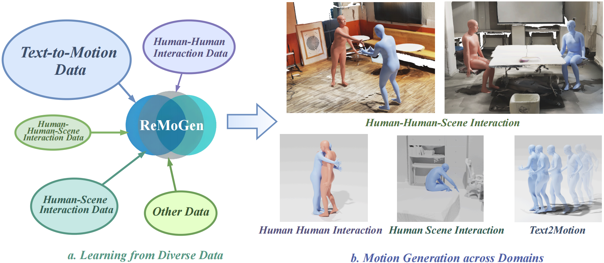
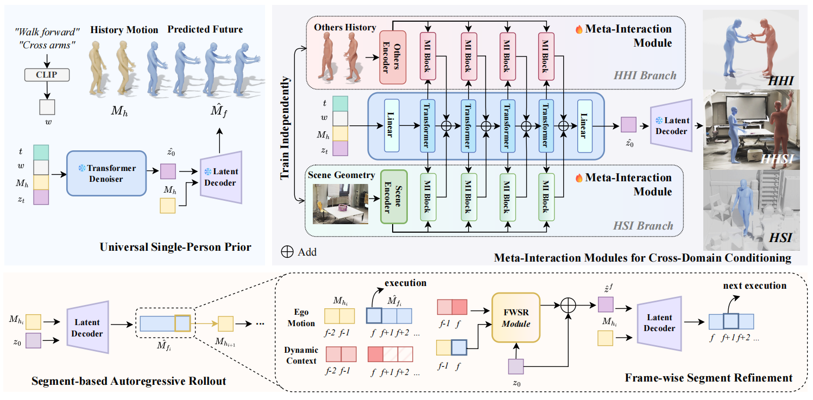

Human behaviors in real-world environments are inherently interactive, with an individual's motion shaped by surrounding agents and the scene. Such capabilities are essential for applications in virtual avatars, interactive animation, and human-robot collaboration. We target real-time human interaction-to-reaction generation, which generates the ego's future motion from dynamic multi-source cues, including others' actions, scene geometry, and optional high-level semantic inputs. This task is fundamentally challenging due to (i) limited and fragmented interaction data distributed across heterogeneous single-person, human-human, and human-scene domains, and (ii) the need to produce low-latency yet high-fidelity motion responses during continuous online interaction. To address these challenges, we propose ReMoGen (Reaction Motion Generation), a modular learning framework for real-time interaction-to-reaction generation. ReMoGen leverages a universal motion prior learned from large-scale single-person motion datasets and adapts it to target interaction domains through independently trained Meta-Interaction modules, enabling robust generalization under data-scarce and heterogeneous supervision. To support responsive online interaction, ReMoGen performs segment-level generation together with a lightweight Frame-wise Segment Refinement module that incorporates newly observed cues at the frame level, improving both responsiveness and temporal coherence without expensive full-sequence inference. Extensive experiments across human-human, human-scene, and mixed-modality interaction settings show that ReMoGen produces high-quality, coherent, and responsive reactions, while generalizing effectively across diverse interaction scenarios.

ReMoGen is a modular framework that learns from heterogeneous interaction data. It supports real-time, high-quality, and coherent reaction generation across both single-domain and mixed-modality interaction settings.

ReMoGen predicts ego motion autoregressively using three components: a frozen text-conditioned single-person motion prior, Meta-Interaction modules that adapt the prior to human-human and human-scene domains, and a Frame-wise Segment Refinement module that updates short predicted segments using the latest interaction cues to achieve low-latency online rollout while preserving motion fidelity.
On Inter-X, ReMoGen generate interactions with natural and stable movement, while maintaining low per-frame latency (0.042s, and w/ FWSR 0.047s).
Blue: ego, Red: others
On LINGO, ReMoGen produces smooth, scene-aware interactions with plausible body dynamics, while still maintaining low latency.
ReMoGen can handle complex three-way interactions involving humans and the scene. In diverse environments, ReMoGen generates coherent mixed human-human-scene interactions.
Blue: ego, Red: others
The universal prior ablation shows that prior-only generation suffers from distribution mismatch, scratch training is limited by scarce interaction data, and joint finetuning weakens pretrained motion knowledge. Keeping the universal prior frozen and adapting with Meta-Interaction modules preserves strong kinematic structure while improving interaction-specific realism and semantic consistency.
Blue: ego, Red: others
Frame-wise Segment Refinement improves responsiveness by applying lightweight per-frame corrections on top of segment-level predictions. Compared with the baseline segment rollout, FWSR reacts more promptly to newly observed interaction cues while maintaining the temporal stability of the backbone generator.
Blue: ego, Red: others
@article{ye2026remogen,
title={ReMoGen: Real-time Human Interaction-to-Reaction Generation via Modular Learning from Diverse Data},
author={Ye, Yaoqin and Xu, Yiteng and Sun, Qin and Zhu, Xinge and Sun, Yujing and Ma, Yuexin},
journal={arXiv preprint arXiv:2604.01082},
year={2026}
}